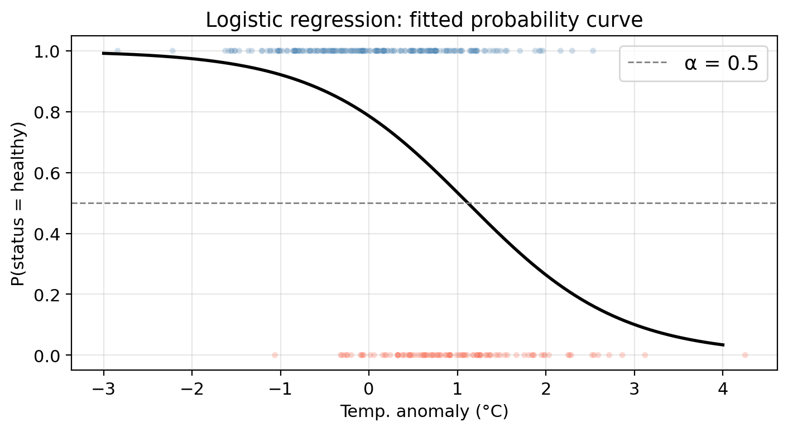
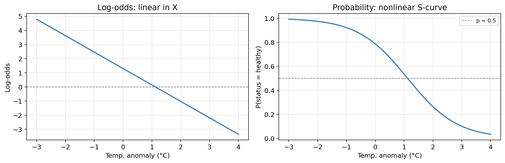
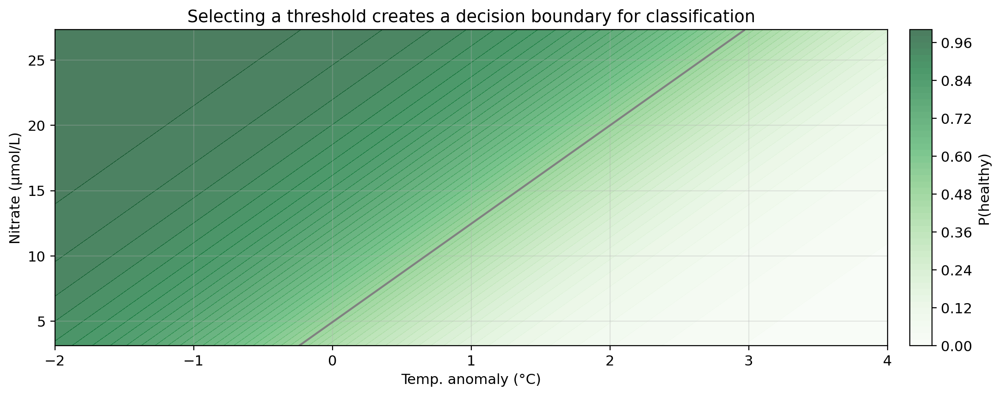
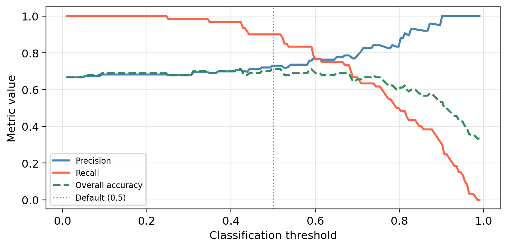
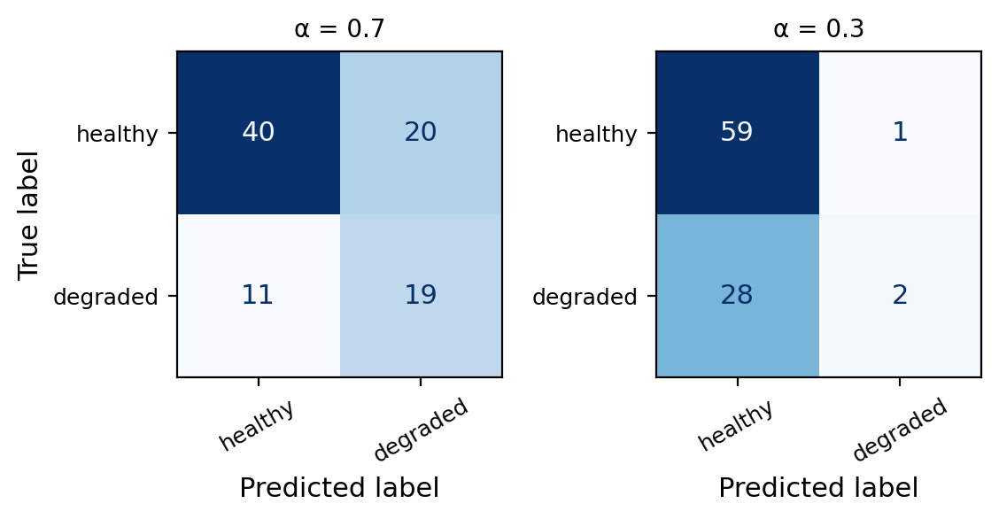

temp_anomaly— sea surface temperature anomaly (°C): deviation from long-term averagenitrate— nitrate concentration (μmol/L)status— kelp forest condition: healthy or degraded

EDS 232
Lesson 6
Logistic regression and ROC curves
A guiding example
The same synthetic dataset from the previous lesson — 300 coastal monitoring stations:
temp_anomaly — sea surface temperature anomaly (°C): deviation from long-term averagenitrate — nitrate concentration (μmol/L)status — kelp forest condition: healthy or degradedCan we predict whether a site is healthy or degraded
based on its oceanographic conditions?
Synthetic data generated for educational purposes only
Logistic regression
Rather than predicting the class directly, logistic regression models the probability that an observation belongs to the positive class:
\[P(Y = 1 \mid X) = p(X).\]
Once we have \(p(X)\), we classify \(X\) using a classification threshold \(\alpha\):
\[ \text{the class of $X$ is} = \begin{cases} \text{class } 1, & \text{if } p(X) \geq \alpha \\ \text{class } 0, & \text{if } p(X) < \alpha \end{cases}. \]
The choice of threshold is something we control.
In our example:
temp_anomalystatus: healthy (class 1/positive) or degraded (class 0/negative). . .
Using logistic regression we can model
\[P(\text{status} = \text{healthy} \mid \text{temp_anomaly}) = p(\text{temp_anomaly}),\]
the probability of a site having a healthy status given a certain temperature anomaly.
. . .
Then, we select a threshold to classify a site as healthy or degraded. E.g., using \(\alpha=0.5\):
A new site has temp_anomaly = 3°C. Walk through the steps to predict its class using \(p(X)\) with threshold \(\alpha = 0.7\).
If we used nitrate as the predictor instead, what would \(p(X)\) be modeling?
. . .
Logistic regression models \(p(X)\) using the logistic (sigmoid) function:
\[p(X) = \frac{e^{\beta_0 + \beta_1 X}}{1 + e^{\beta_0 + \beta_1 X}}.\]
Logistic function: \(p(X) = \frac{e^{\beta_0 + \beta_1 X}}{1 + e^{\beta_0 + \beta_1 X}}\)
. . .
Training data: \((x_1, y_1), \ldots, (x_n, y_n)\), where each \(y_i \in \{0, 1\}\)
. . .
Idea: estimate coefficients \(\hat{\beta}_0\) and \(\hat{\beta}_1\) that make the observed data as probable as possible:
To find such \(\hat\beta_0\), \(\hat\beta_1\) we maximize the likelihood function:
\[\mathcal{L}(\beta_0, \beta_1) = \prod_{i:\, y_i = 1} p(x_i) \cdot \prod_{i:\, y_i = 0} \bigl(1 - p(x_i)\bigr).\]


Using the fitted logistic model,
what is the predicted status of a site with temp_anomaly = 0.5°C? Use the threshold \(\alpha = 0.5\).

Using the fitted logistic model,
what is the predicted status of a site with temp_anomaly = 0.5°C? Use the threshold \(\alpha = 0.5\).
Using the probability function we obtain \(p(0.5) = 0.6722\). Since this is above the classification threshold of 0.5, the site is predicted as ‘healthy’.
Interpreting the coefficients
Starting from the logistic function
\[p(X) = \frac{e^{\beta_0 + \beta_1 X}}{1 + e^{\beta_0 + \beta_1 X}},\]
rearrange it to get the odds:
\[\frac{p(X)}{1 - p(X)} = e^{\beta_0 + \beta_1 X}.\]
Take the natural logarithm to get the log-odds:
\[\log\left(\frac{p(X)}{1 - p(X)}\right) = \beta_0 + \beta_1 X.\]
The log-odds are defined by
\[\log\left(\frac{p(X)}{1 - p(X)}\right) = \beta_0 + \beta_1 X.\]
Notice the log-odds is linear in \(X\).
. . .
In addition, \(p(X)\) changes in the same direction as the log-odds.
This helps us understand the relationship between \(X\) and \(p(X)\):
increasing \(X\) \(\Rightarrow\) log-odds increase \(\Rightarrow\) probability of belonging to positive class \(p(X)\) increases
increasing \(X\) \(\Rightarrow\) log-odds decrease \(\Rightarrow\) probability of belonging to positive class \(p(X)\) decreases

The log-odds scale is linear; the probability scale is the familiar S-curve.
Both representations contain the same information.
The fitted model has \(\hat{\beta}_0 =\) 1.300 and \(\hat{\beta}_1 =\) -1.164.
What does the sign of \(\hat{\beta}_1\) tell us about the relationship between temperature anomaly and kelp forest health?
. . .
A negative \(\hat\beta_1\) means that as temperature anomaly increases (warmer ocean conditions), the log-odds of a healthy site decrease, which implies the probability of healthy status decreases.
So warmer-than-average temperatures are associated with degraded kelp forests.
Hypothesis testing
If \(\beta_1 = 0\), then:
\[p(X) = \frac{e^{\beta_0}}{1 + e^{\beta_0}} = \text{constant}\]
meaning the probability of the positive class does not depend on \(X\) at all.
Our hypotheses thus are:
. . .
We test this using the Z-statistic (analogue of the t-statistic in linear regression):
\[Z = \frac{\hat{\beta}_1}{\text{SE}(\hat{\beta}_1)}.\]
A large \(|Z|\) provides evidence against \(H_0\). The p-value quantifies how likely we would observe a Z-statistic this extreme if \(H_0\) were true.
The table below shows the results for the logistic regression of status on temp_anomaly. What does the \(p\)-value for temp_anomaly tell us?
Coefficient Estimate Std. Error Z-statistic p-value
Intercept 1.3000 0.1748 7.437 0.0000
temp_anomaly -1.1639 0.1739 -6.693 0.0000. . .
Very small \(p\)-value for temp_anomaly: strong evidence against \(H_0\): temperature anomaly is significantly associated with kelp forest status.
We reject \(H_0: \beta_1 = 0\): there is a real relationship between temperature anomaly and the probability of a site being healthy.
Multiple logistic regression
The logistic model extends naturally to multiple predictors \(X_1, X_2, \ldots, X_p\):
\[p(X) = \frac{e^{\beta_0 + \beta_1 X_1 + \cdots + \beta_p X_p}}{1 + e^{\beta_0 + \beta_1 X_1 + \cdots + \beta_p X_p}}.\]
The log-odds remain linear in all predictors:
\[\log\left(\frac{p(X)}{1 - p(X)}\right) = \beta_0 + \beta_1 X_1 + \cdots + \beta_p X_p.\]
. . .
Each coefficient \(\hat\beta_j\) represents the change in log-odds for a one-unit increase in \(X_j\), holding all other predictors constant:
In our example:
temp_anomaly, nitratestatus: healthy (class 1/positive) or degraded (class 0/negative)Using logistic regression we can model
\[P(\text{status} = \text{healthy} \mid \text{temp_anomaly}, \text{nitrate}) = p(\text{temp_anomaly}, \text{nitrate}),\]
the probability of a site having a healthy status given a certain temperature anomaly and nitrate concentration.
Then, we select a threshold to classify a site as healthy or degraded. E.g., using \(\alpha=0.5\):


Darker green = higher predicted probability of healthy status.

Darker green = higher predicted probability of healthy status.

Darker green = higher predicted probability of healthy status.
Gray line = decision boundary using the threshold \(\alpha = 0.5\).

Blue region = predicted healthy, red region = predicted degraded.
Gray line = decision boundary using the threshold \(\alpha = 0.5\).

Blue region = predicted healthy, red region = predicted degraded.
Gray line = decision boundary using the threshold \(\alpha = 0.5\).
Points in the “wrong” region are misclassified.
Adjusting the classification threshold
The default threshold \(\alpha = 0.5\) is just a convention. We can choose any value between 0 and 1.
. . .
Suppose the threshold is raised to \(\alpha = 0.9\). What type of error (FP or FN) would you expect more of, and what does this mean for precision and recall? Now repeat for \(\alpha = 0.2\).
. . .
\(\alpha = 0.9\): Only sites with very high predicted probability are classified as healthy. Many truly healthy sites fall below this bar and are classified as degraded → many false negatives. Precision increases (when we do predict healthy, we’re usually right), but recall falls.
\(\alpha = 0.2\): Almost every site is classified as healthy. Most truly healthy sites are caught → very few false negatives → high recall. But many degraded sites are also classified as healthy → many false positives → precision
Changing the threshold has a tradeoff between recall and precision:
Raising the classification threshold means fewer observations get predicted as positive: precision increases, recall decreases (more false negatives).
Lowering the classification threshold means more observations get predicted as positive: recall increases, precision decreases (more false positives).
. . .
There is no single correct answer and the selection must be guided by:
The graph below shows the precision, recall, and overall accuracy for our multiple logistic regression kelp forest status classifier at different classification threshold levels.

What would we miss by evaluating performance using only overall accuracy?
The graph below shows the precision, recall, and overall accuracy for our multiple logistic regression kelp forest status classifier at different classification threshold levels.

What would we miss by evaluating performance using only overall accuracy?
Overall accuracy hides the precision–recall tradeoff.
A threshold that maximizes accuracy may still have poor recall (missing many healthy sites) or poor precision (flagging many degraded sites).
The green dashed line barely changes across a wide range of thresholds, but precision and recall shift a lot!
ROC curves and AUC
The ROC curve plots two metrics against each other across all possible thresholds.
It uses the following metrics:
True Positive Rate (TPR) = Recall
\[TPR = \frac{TP}{TP + FN}\]
Of all truly healthy sites, what fraction did we correctly identify?
False Positive Rate (FPR)
\[FPR = \frac{FP}{FP + TN}\]
Of all truly degraded sites, what fraction did we incorrectly flag as healthy?
. . .
We obtain the ROC curve by calculating the TPR and the FPR at every value classification threshold and then plotting TPR with respect to FPR.
We obtain the ROC curve by calculating the TPR and the FPR at every value classification threshold and then plotting TPR with respect to FPR.
Use the confusion matrices to fill in the table. Then sketch the ROC curve through those points.
| Threshold (α) | TPR | FPR |
|---|---|---|
| 1.0 | ||
| 0.7 | ||
| 0.3 | ||
| 0.0 |


α TPR FPR
1.0 0.000 0.000
0.7 0.667 0.367
0.3 0.983 0.933
0.0 1.000 1.000The curve always goes from (0, 0) to (1, 1).
Lowering the threshold raises both TPR and FPR.
We gain recall at the cost of more false positives.

The AUC summarizes the entire ROC curve in a single number. Mostly used to compare models.
| AUC | Interpretation |
|---|---|
| 1.0 | Perfect classifier |
| > 0.8 | Good discriminating ability (in most applications) |
| > 0.5 | Some discriminating ability |
| 0.5 | Random classifier (no better than a coin flip) |

A colleague proposes a model with AUC = 0.52. Would you use it over the logistic regression? Why or why not?

A colleague proposes a model with AUC = 0.52. Would you use it over the logistic regression? Why or why not?
A model with AUC = 0.52 is barely better than random and almost certainly not useful in practice. The logistic regression would be preferred.